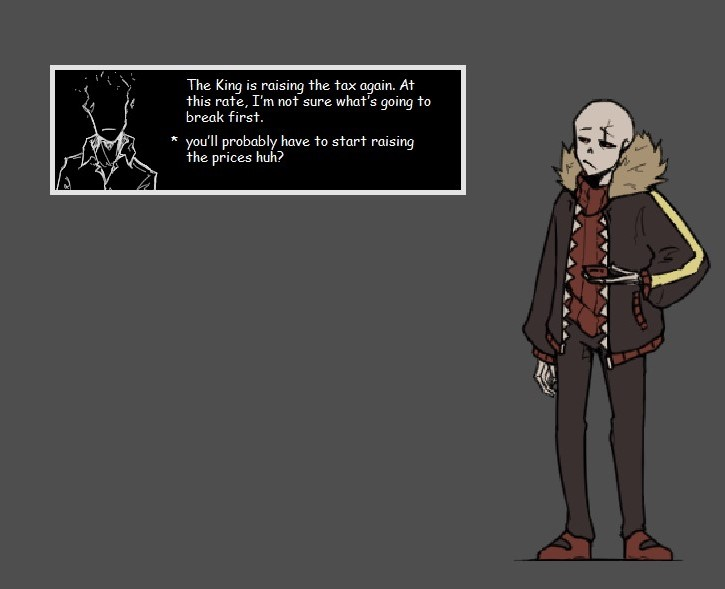
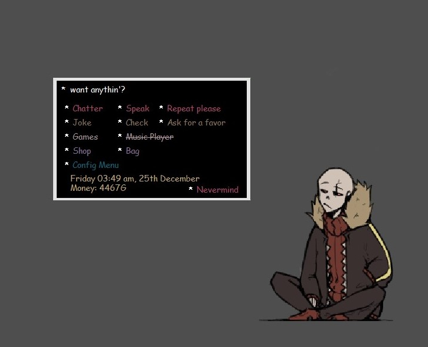
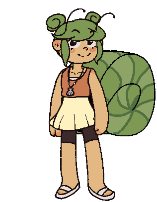

What even is this website/SSP
This page is for Ghosts/Ukagaka. They are basically the japanese (better) version of the Windows Clippy or BonziBuddy.
If you don't know either of them- let me explain. Ukagaka are desktop buddies. They are displayed on your screen and can do various things.
For example, emptying your recycle bin, spewing nonsense, tracking time or even serving as tasklists or alarms. Or something simple as dress up game.
If you're intrigued, be sure to check out the webring on the left and test out some Ukagaka!
How to install SSP (On Windows)
1. Install from the button above or official website
2. Open SSP.exe
3. Right click and click "English" under "Language". Restart.
4. Now you can drag any ghost onto the start up one and they'll auto install.
How to install SSP (On Mac?)
I have no idea of other OS so please drop into the Ukagaka Server and look for resources. Thanks for your understanding.
UF!Sans Ukagaka

Description
Ever wanted to be foulmouthed by your favorite edgy skeleton?
Well, now your time has come! He can lounge around your desktop, blast your favorite music in a handy included music player, empty your recycle bin, tell you a bunch of terrible jokes, the current time or little alarms you can set for yourself, speak to you, learn about as well as react to your actions and much much more. He is of course, based on my own headcanons (but watered down to appeal to more people), instead of official designs etc. Sans also features animations, that can however be turned off after the first boot!
Functions
- User defined pronouns and name
- Animations (toggleable)
- An own feelings and mood system
- Jokes (dark humor can be toggled off & filtered)
- Head and face pat interaction
- Ask sans menu
- Random dialogue (frequency changeable) and KoFi supporter thanking dialogue
- Interaction with other UF characters (Grillby, Papyrus, Alphys)
- Games (Coin throw, Rock paper scissors, Tic tac toe, Gold digger)
- Shop and inventory system
- Variable backup
- Hidden events?
- Utility functions: Alarms, Empty recycle bin, Fix PC clock, Calendar, Change desktop image, Battery notify, Email check, RSS feeds, hourly reminders (toggleable)
- Currently inaccessible: Music player, Program shortcuts, AI Chat, Desktop stars(?)
Snail Collab Ukagaka

Description
Want a little comfort buddy?
Snail is just a little bean that can hang around your desktop and try on many different clothing combinations! You may even get her to ramble about her interests, spout a couple curious rock facts? Perhaps watch her sing to herself? We (Galla, Misu, me) made her over the course of a week for an event, but now decided to brush up her errors and add more clothing items.
Functions
- Fully customizable look through dress up options
- Self care tips
- Facts
- Random dialogue (frequency changeable)
- Currently inaccessible: Various unlockable dialogue
Credits
- Galla (Warning explicit/NSFW): Pillowfort | Twitter
- Misu: Tumblr
- Change: Tumblr